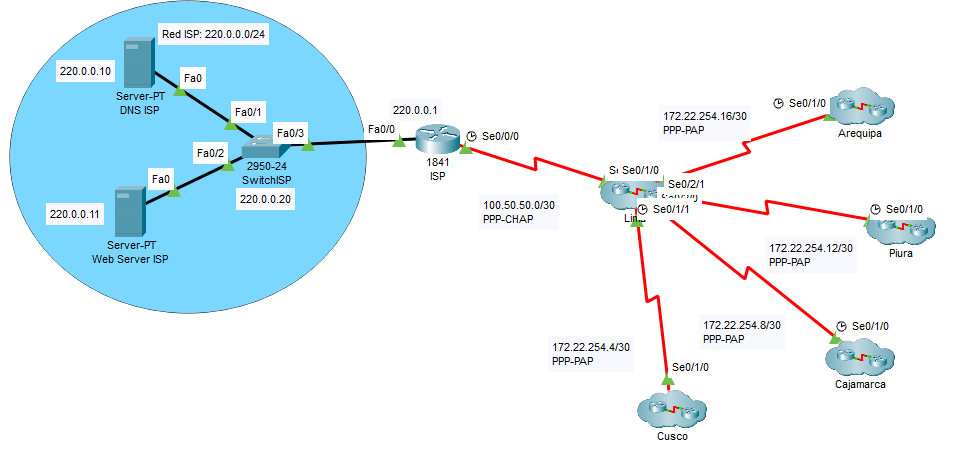

Características principales:
- VLANs e inter-VLANs: Segmentación eficiente para gestionar el tráfico interno y mejorar la seguridad.
- Enrutamiento estático y dinámico (RIPv2): Configuración de rutas para garantizar la conectividad entre sucursales y la sede principal.
- Servicios de red: Implementación de DNS, FTP y otros servicios esenciales para el funcionamiento de la red.
- Seguridad con ACLs: Restricción de accesos no autorizados y protección del tráfico sensible.
Imágenes
Pantalla principal
Sede de Lima
Configuracion del Servidor Mail
Configuracion del router de Lima